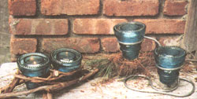
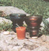
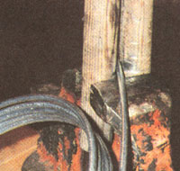
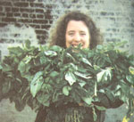

Country Lore
Vinegar : All-Purpose Cleaner
Vinegar is a handy item to have in your kitchen, as most of us do already. Everyone knows it makes the best (and the cheapest) glass cleaner, and mixed with a little water can clean many items in your home. The commercial coffee maker cleaners are not only costly, in most cases, but contain things that may be harmful if any is left behind. One thing I clean with vinegar is my coffee maker.
Put about three cups of white vinegar and a cup of water into your coffee maker. Run this through as though you were making a pot of coffee. You will be surprised by what will come out if you have a lot of iron or other minerals in your water. Rinse the coffee maker by running through a pot of fresh water.
-Beverly Kleikamp
Powers, MI
Now to make candle holders from old phone insulators.
Crafty Uses for Old Insulators
My family has been collecting, I should say gathering, insulators for years. There was a telephone line right-of-way across one corner of our property and the little green glass knobs seemed to pop up each spring like field stones.
It was exciting to find a new one, especially if it was all in one piece without chips. My children would wash them and put them around for decorations. That was all they seemed to be useful for. They were designed for telephone wires and when the wires were enclosed in sealed cables, the insulators became obsolete. If one thinks of all the telephone wires across the country, it's easy to understand that they are not very rare. the excitement really ended when we found them in antique stores at prices that almost equate to recycled glass. However, I became determined to find a use for them beyond the paperweight.
One day, I found one with a relatively flat top and turned it over, and it stood up with a candle in it. It reflected the flame and was quite pretty. Most tops were too round to stand upside down. Even the flat tops were unstable and probably could be dangerous with a flame in them. The search was on to develop a method to hold them upright.
A round wood curtainring would cradle the top of the insulator and provide stability. I simply put some epoxy around the ring and stood the insulator on it. The small tea-light type is the least expensive per candle and is easily changed when it is burned out. The little aluminum cup holds the wax and it pops right out. The larger or scented votive type lasts much longer, but requires hot-water cleaning to remove the wax when it burns out.
My next approach was to put the insulators in small flower pots I got in a craft store. These pots only cost $0.69. The only disadvantage is that more than half the glass is inside and not visible; but this is made up for by the interesting combination of materials.
By now the creative juices were flowing. I could really get into this idea. I needed other supporting ideas. First I discovered that bent wire works as an interesting support material. Grapevines or small twigs tied together works well too. So now we have many uses for the little green glass globs that used to just sit around on tables or on our garden walls or in closets or boxes in the attic.
-Walter Katz
Sparta, NJ
Save the Soaps!
According to recent US. Department of Commerce statistics, approximately 950 million pounds of toilet soap are manufactured annually. This is roughly equivalent to 2.75 billion bath-size bars.
When a bar of soap becomes a sliver of soap, it's awkward to use, and frequently breaks into two pieces, at which time most people discard it. I've conservatively estimated that the sliver weighs about a quarter of an ounce, or about 1/22 of the average bath-size bar. Using our 2.75 billion figure, it is likely that about 43 million pounds of soap are being discarded annually, a resource that is literally going down the drain.
While seeking a solution I discovered that a sliver will fuse readily with a new bar, especially if the surface of the new bar has a slight depression (I softened the surface with a small butane torch and made a shallow depression with a metal plate.). However, this depression is already provided in some brands. Moisten the adjacent surfaces and firmly press the sliver onto the new bar. Cover the bar with plastic wrap and weigh it down with a medium-size, hardcover book, or object of equivalent weight, for about an hour. Fusion will be completed as you use the new bar. You'll find that you can take four to five showers before the sliver is totally consumed.
-John E. Turner
Chicago, IL
Don't Let the Ice Cream Melt
When I go food shopping, some 20 miles away I take a large ice chest to carry back the perishables. Instead of the mess and bother of ice cubes, I use my own version of ice packs (over and over again). I fill plastic liter bottles with water almost to the top, cap, and freeze. You could use any size bottles. I've used these for years and thought your readers might be interested.
-Joseph Kaye
Uniondale, NY
Elisabeth' s Basil Cubes
For years I've enjoyed fresh basil from my garden all the way through the winter. Each fall I gather all my basil and blend the leaves in my blender with a little olive oil and salt. Then I take the mixture and pour it into ice cube trays and freeze. Whenever I want to make pesto or add garden-fresh basil to a recipe, I simply melt a cube.
-Elisabeth Sinsabaugh
Brooklyn, NY
Through the years, we've all discovered a few practical, time-tested solutions to the frustrating little problems of everyday life. Send your tips to: "Country Lore" c/o Mother Earth News, P.O. Box 129, Arden, N.C. 28704, or write to us via e-mail at MEarthNews@aol.com . Please include your phone number and a photo. If we use your letter, we'll be happy to send you a Mother Earth News T-shirt.
|
|
 |
 |
|
 |
 |
|